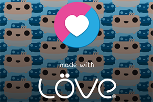
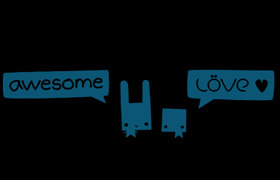
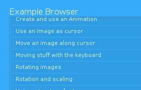
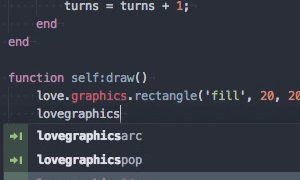
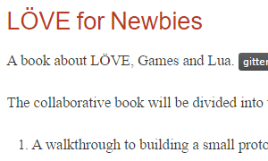

Löve Community
The main purpose of this organisation is to keep projects alive, which benefit the LÖVE community as a whole. This includes project which have the purpose of documenting, spreading or improving LÖVE.
Current projects
splashes
 A collection of splash screens for LÖVE.awesome-love2d
 A categorized community-driven collection of high-quality, awesome LÖVE libraries, projects, and resources.Löve Example Browser
 The Example browser containing many helpful examples to get you started in LÖVE.LÖVE-API
 The complete API documentation of LÖVE contained in a lua table.LÖVE Book
 A book about LÖVE, Games and Lua.Contributions encouraged!
Feel free to fork any of the projects and send us your *awesome* improvements.
Joining the organisation
Currently we only add people who actively maintain the projects in the organisation. If you want to become a maintainer send us a message on the love-forums, contact us via gitter or ask in the official LÖVE IRC.